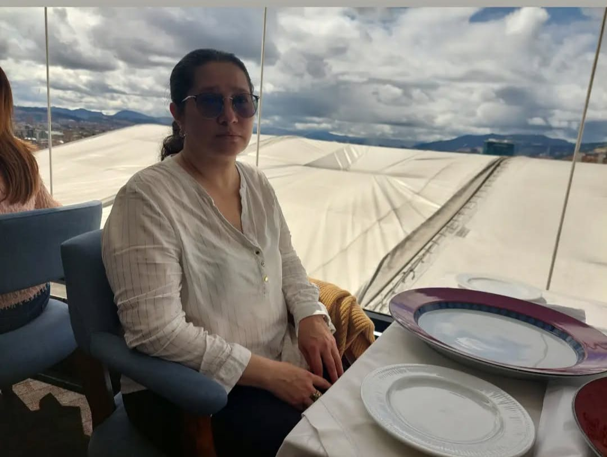

Leyvi Vargas
Mi mamá ha sido una mujer valiente y llena de determinación desde muy joven. Se convirtió en madre a una edad temprana y asumió con fortaleza el reto de criar a sus tres hijas, dedicándose por completo a sacarnos adelante. A pesar de las dificultades que se le presentaron en el camino, nunca dejó que estas fueran un impedimento para brindarnos un hogar lleno de amor y seguridad. Su esfuerzo y sacrificio han sido un ejemplo constante en nuestras vidas, mostrándonos el valor del trabajo duro y la resiliencia. Con el paso del tiempo, logró establecerse laboralmente, y aunque trabajó en el exigente sector de la construcción, siempre encontró la forma de equilibrar sus responsabilidades laborales con su papel como madre. Actualmente, ella es pensionada, disfrutando del fruto de años de esfuerzo incansable, pero su espíritu trabajador y su determinación siguen siendo una fuente de inspiración para mí y para mi familia. Su historia es un recordatorio de la fuerza y el amor que impulsan a una madre cuando se trata de sus hijos.
Mi hermana mayor ha sido una presencia constante en mi vida, alguien con quien compartí los años más formativos y los retos de una infancia marcada por la dificultad. Crecimos juntos enfrentando adversidades que a menudo nos hicieron madurar antes de tiempo, pero también nos unieron de una manera especial. Ella siempre ha sido un ejemplo de fortaleza y resiliencia, encontrando formas de enfrentar cada desafío con valentía. En los momentos más duros, su apoyo y su capacidad para mantenerse firme se convirtieron en un faro de esperanza para mí. Aunque nuestras circunstancias no fueron fáciles, logramos construir juntos recuerdos significativos y mantener un vínculo que sigue siendo profundo e inquebrantable hasta el día de hoy. Su presencia en mi vida ha sido un regalo invaluable, y siempre la llevaré en mi corazón como una aliada y una fuente de inspiración.
Carlina Vargas
Mi mamá ha sido una mujer valiente y llena de determinación desde muy joven. Se convirtió en madre a una edad temprana y asumió con fortaleza el reto de criar a sus tres hijas, dedicándose por completo a sacarnos adelante. A pesar de las dificultades que se le presentaron en el camino, nunca dejó que estas fueran un impedimento para brindarnos un hogar lleno de amor y seguridad. Su esfuerzo y sacrificio han sido un ejemplo constante en nuestras vidas, mostrándonos el valor del trabajo duro y la resiliencia. Con el paso del tiempo, logró establecerse laboralmente, y aunque trabajó en el exigente sector de la construcción, siempre encontró la forma de equilibrar sus responsabilidades laborales con su papel como madre. Actualmente, ella es pensionada, disfrutando del fruto de años de esfuerzo incansable, pero su espíritu trabajador y su determinación siguen siendo una fuente de inspiración para mí y para mi familia. Su historia es un recordatorio de la fuerza y el amor que impulsan a una madre cuando se trata de sus hijos.
Leyvi Vargas
Mi mamá ha sido una mujer valiente y llena de determinación desde muy joven. Se convirtió en madre a una edad temprana y asumió con fortaleza el reto de criar a sus tres hijas, dedicándose por completo a sacarnos adelante. A pesar de las dificultades que se le presentaron en el camino, nunca dejó que estas fueran un impedimento para brindarnos un hogar lleno de amor y seguridad. Su esfuerzo y sacrificio han sido un ejemplo constante en nuestras vidas, mostrándonos el valor del trabajo duro y la resiliencia. Con el paso del tiempo, logró establecerse laboralmente, y aunque trabajó en el exigente sector de la construcción, siempre encontró la forma de equilibrar sus responsabilidades laborales con su papel como madre. Actualmente, ella es pensionada, disfrutando del fruto de años de esfuerzo incansable, pero su espíritu trabajador y su determinación siguen siendo una fuente de inspiración para mí y para mi familia. Su historia es un recordatorio de la fuerza y el amor que impulsan a una madre cuando se trata de sus hijos.